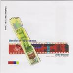

Home Artist links Label link

| Artist: | Parallel Or 90 Degrees |
| Title: | Unbranded - Music From The E.E.C. Surplus |
| Label: | Cyclops CYCL 092 |
| Length(s): | 73 minutes |
| Year(s) of release: | 2000 |
| Month of review: | 08/2000 |
Line up
Sam Baine - keyboards
Andy Tillison - vocals, keyboards
Alex King - bass
Ken Senior - drums
Gareth Harwood - guitars
(the instrumentation is tentative)
Tracks
| 1) | Gods Of Convenience | 9.10
|
| 2) | Migraine | 8.19
|
| 3) | Unbranded | 8.36
|
| 4) | Shoulder To Shoulder | 11.26
|
| 5) | Space Junk | 10.38
|
| 6) | An Autopsy In Artificial Light | 25.04
|
Summary
The new PO90 album with as a bonustrack the sequel to Afterlifecycle.
Since the previous album there have been plenty of line-up changes
with the rhythm section leaving.
The music
The album opens with melodic, friendly piano developing the theme for the
song. Then some cosmic keyboards set in, accompanying the piano and the
music builds up an expectancy. The theme is repeated with lush keyboards
and then finally the guitar sets in and the track moves into gear. Tillison
soon starts to sing about the Gods Of Convenience, a song about religion.
The shouted chorus reminds me a bit of Everon strangely enough. Then its
time for a quiet interlude with modern rhythms. The song then turns for
the optimistic in a way, but featuring also some tense staccato guitar playing
and meandering solo keyboards. After another vocal part similar to an
earlier one the music becomes subdued again with some voices sampled and
such leaving a kind of spacey mood until the end.
Quite a lengthy track as in fact are all the tracks on this album, well
composed, energetic (as I have come to expect from PO90) and quite high
on atmosphere as well. The first track moves right into the darker
Migraine with its modern rhythms. Whispered vocals precede the slightly vocoded
vocals of this track. The bass plays a prominent part here. As is often the
case there's an alternation between the subdued and the heavy, coming in waves.
Sometimes the music on this track moves into the direction of bands such
as Prodigy, but never that heavy or aggressive. The song seems more
keyboard dominated with a jazzy solo and an Emerson influenced one.
At the end the bass plays repetitively until a sharp guitar supposedly gives
everybody a headache. The title track then. This is better than the previous
one. The melody suits me more and the typical alternation between subdued
and heavy works well. The music is rather riff dominated and has those washes
of Hammond organ that is so dominating during their live concerts with
some orchestral/bombastic additions on keyboards and, mainly, guitar.
With the next one we pass the eleven minute mark: Should To Shoulder opens
reflectively with flute. This song builds up very slowly, melodically and
apeallingly. The music works up to mid-tempo with rhythm guitar and
hence up to the first vocal climax, which is the title of the track.
Then the music backs down a little and the flute comes back in giving way
to a dark and rhythmic passage with bleepy keys. Then the vocals return
in force, and the influences of Hammill shine through, they are never that
far off, although PO90 takes those influences to make something new out of
it as well. They are not copy-cats. In my opinion the best track
up to now, although the ambient ending takes a bit long maybe. Here Floyd
is a point of reference (minus the flute then, which sounds a bit too happy
for Floyd). Even some mellotron in there.
Space Junk is the last of the album tracks, because I believe that the final
track should be considered a kind of bonus track. Space Junk opens with
heavy percussion and involved keyboards all up-tempo. All in all this is
one of the heavier tracks with an aggressive chorus and driven playing
in between. Also in this track I hear some echoes the Prodigy, showing that
PO90 is not sticking to the past, but combines its influences from various
places just as Porcupine Tree tends to do.
An Autopsy In Artificial Light is the twentyfive minute bonus track which
is the sequel to Afterlifecycle from two the second album. It opens
atmospherically with Simmer, the first part. Then the speed gradually builds
up to something akin to ELP building up to a keyboards part that
will a memorable part of this track. Piano and rather subdued low vocals
form the basis of the second part of the track. After a long involved
instrumental passage the music winds down to something akin to film music.
Melodic and also quite sad. Then the bands set in again, but keeping it
quite melodic working up to a triumphant passage and from then on some
of the passage are repeated until the end. A very good epic track in the
style of Afterlifecycle.
Conclusion
Another good album from the band. I have my preferences liking Migraine the
least of the tracks and liking Should To Shoulder and An Autopsy the most.
The others are somewhere in between. The music is as we have come to expect
from this band: from subtle to aggressive and incorporating influences of
ELP, Van Der Graaf Generator and some Pink Floyd, but also newer bands
outside our sphere of progressive such as Prodigy, including modern rhythms
and keyboards. Compared to the previous album, I think the songs are generally
less concise, but for the rest I'm hard put to give any real differences
(maybe the rhythm section then).
© Jurriaan Hage